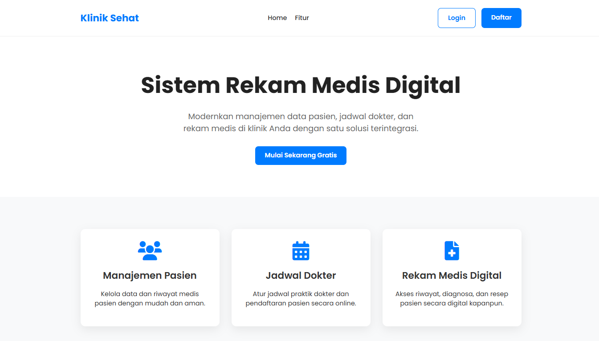
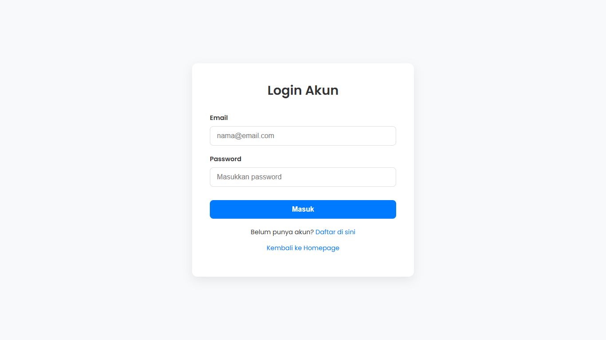
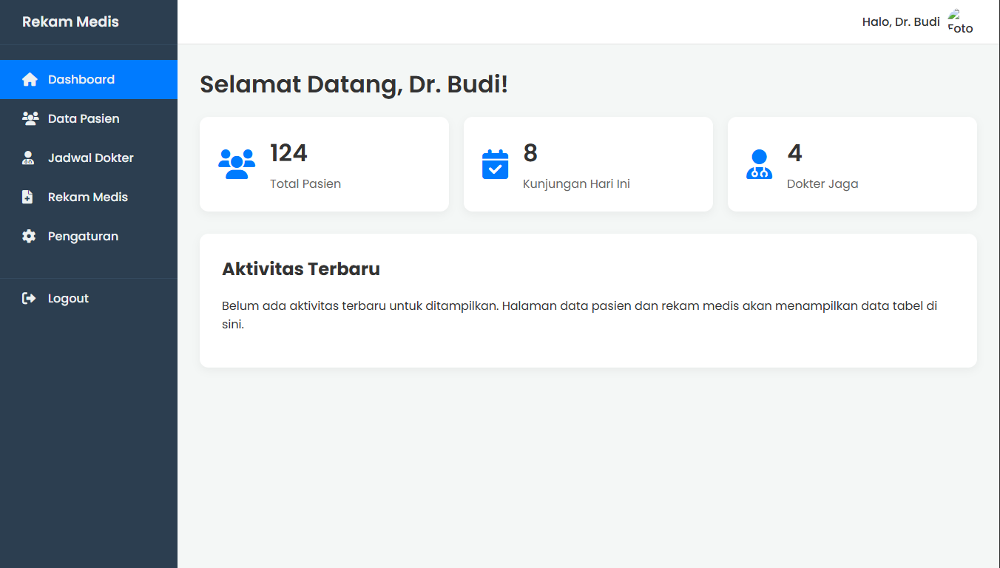
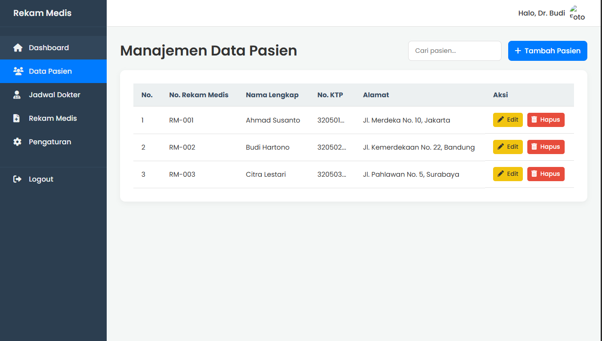
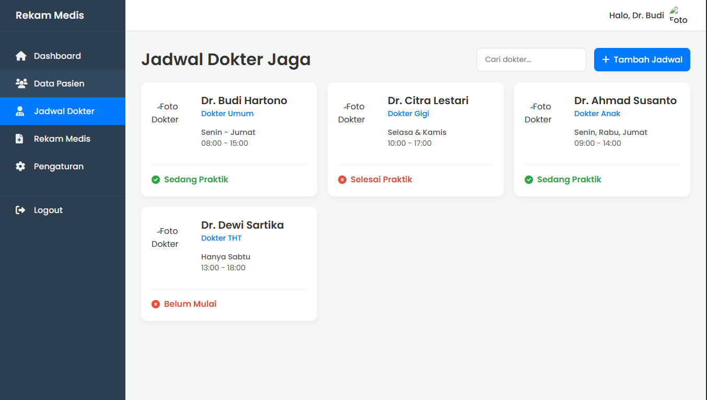
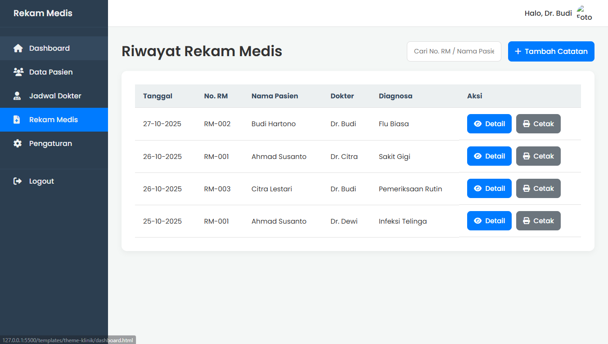
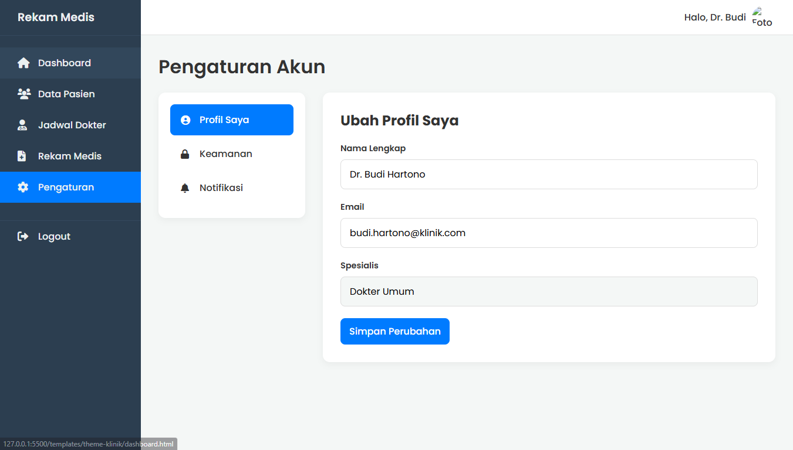

Tema Aplikasi Klinik (Multi-halaman)







Tentang Template Ini
Ini adalah Tema Aplikasi Web (Web App Theme) lengkap dan kohesif untuk studi kasus Sistem Informasi Rekam Medis Klinik.
Tujuannya adalah untuk menunjukkan alur pengguna lengkap, mulai dari melihat homepage, mendaftar, login, hingga menggunakan aplikasi dashboard-nya.
Fitur Utama & Halaman Termasuk:
- Desain Konsisten: Palet warna, tipografi, dan komponen yang seragam.
- Homepage (Landing Page): Halaman publik untuk menjelaskan fitur.
- Halaman Login & Register: Halaman autentikasi yang bersih.
-
Dashboard Aplikasi Lengkap (5 Halaman):
- Dashboard Utama (Statistik)
- Data Pasien (Layout Tabel CRUD)
- Jadwal Dokter (Layout Kartu)
- Rekam Medis (Layout Tabel Riwayat)
- Pengaturan (Layout 2 Kolom)
- Sepenuhnya Responsif: Baik Homepage maupun Dashboard aplikasi.
Teknologi yang Digunakan:
- HTML5
- CSS3 (Flexbox, Grid, CSS Variables)
- JavaScript (Vanilla JS untuk fungsionalitas)